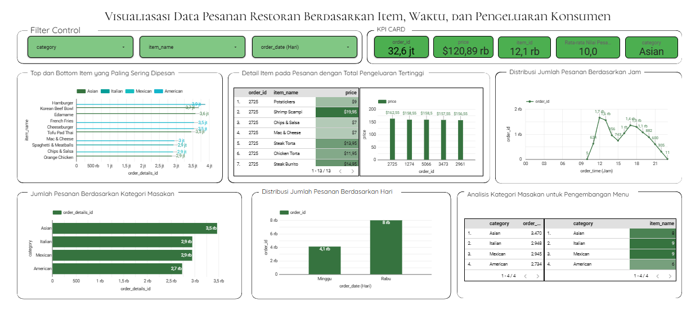

Restaurant Order Analysis Dashboard
- Menganalisis 12.234 data pesanan restoran menggunakan Python dan membangun dashboard interaktif di Looker Studio.
- Mengidentifikasi Hamburger sebagai menu terlaris dan kategori Asian sebagai kategori paling populer dengan 3.470 pesanan.
Meraih Top 3 Dashboard Terbaik dari >500 peserta (DQLab)
PythonLooker StudioData Visualization